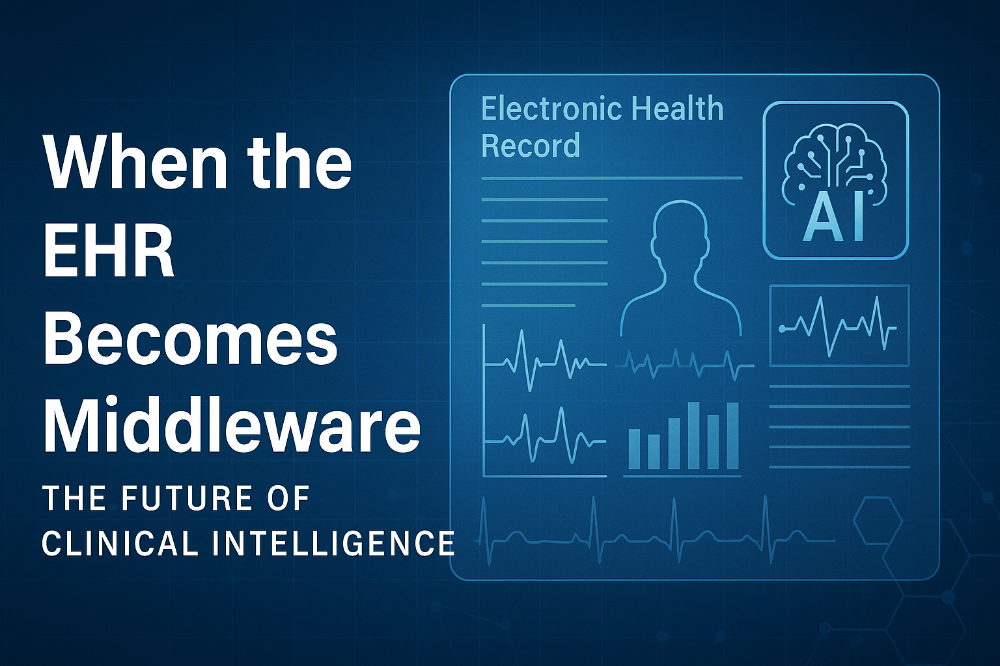
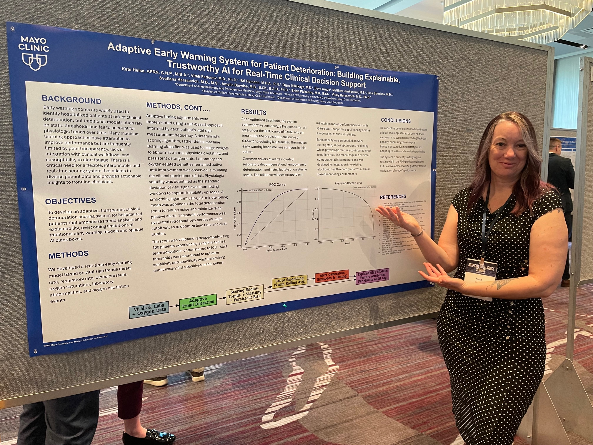

Blog
Short reflections, insights, and ideas from the intersection of critical care, technology, and innovation.
When the EHR Becomes Middleware: The Future of Clinical Intelligence
October 2025
As artificial intelligence evolves, the electronic health record (EHR) will no longer serve as the primary interface between clinicians and data — it will become the middleware that connects everything else.
Today, clinicians spend too much time documenting, searching, and reconciling information that systems should already know. But in the near future, documentation will be ambient — captured automatically through voice, motion, and contextual awareness during patient interactions. AI will recognize not only words, but intent, emotion, and physiologic signals, building a complete narrative of the encounter without interrupting the flow of care.
In that model, the EHR becomes a translator, not a destination — the engine that harmonizes structured data from wearables, sensors, devices, and human interaction into a coherent clinical record. It becomes invisible, yet indispensable.
When that happens, the true measure of a successful digital system won’t be how much we enter into it, but how seamlessly it understands what’s happening in real time.
The challenge for healthcare leaders isn’t just building smarter systems — it’s building systems clinicians can trust. Technology should amplify human connection, not replace it. The organizations that succeed will be those that combine ethical AI, thoughtful design, and clinical wisdom into one intelligent, learning infrastructure.
“The future of the EHR isn’t documentation. It’s translation.”
Bridging Innovation and Implementation: The Hidden Pipeline
August 2025
Every great idea in healthcare innovation starts with a spark — a conversation, a frustration, or a moment of “why can’t we just…” But transforming that spark into something measurable, scalable, and sustainable requires more than a good idea. It needs a pipeline.
Over the past few years, I’ve seen countless brilliant concepts stall between pilot and practice. It’s not a lack of creativity or data — it’s the missing structure that turns innovation into implementation. That’s where I’ve focused much of my work: building frameworks like RAPID that bridge bedside insight and enterprise systems.
The key is closing the loop — connecting those who see the problems with those who can solve them, and ensuring the solution doesn’t stop at a single unit, department, or site. That’s where digital platforms, thoughtful data pipelines, and human-centered design converge.
If we can master that bridge — the space between ideas and implementation — we can make healthcare innovation not just possible, but predictable.
“Innovation isn’t just about creating new things. It’s about making good ideas unavoidable.”
Adaptive Early Warning at the Mayo Clinic AI Summit
July 2025
Today I had the opportunity to present my poster at the Mayo Clinic AI Summit on a project close to my heart: using adaptive time frames and volatility metrics to improve early warning systems for patient deterioration.
Instead of static thresholds or fixed time windows, I developed a model that adapts based on how often vitals and labs are checked. The goal is to improve real-time alerting and reduce noise while still catching critical changes early.
This is part of my ongoing work to build smarter, context-aware clinical tools that actually work for frontline teams — because in healthcare, timing isn't everything… but it's close.
It was inspiring to see the energy around healthcare AI today — from predictive models to workflow optimization — and to share space with others passionate about using data responsibly and effectively.
I’m especially proud that this project brings together my background in nursing, as a nurse practitioner, operations, and analytics.
More to come soon. I’m always up for collaborating on meaningful projects at the intersection of care and computation.
Why We Built a Conference That Doesn’t Require a Plane Ticket
December 2024
The Critical Care Stay Conference started with a simple idea: what if meaningful professional development didn’t require leaving the hospital, using PTO, or paying hundreds in registration fees? We brought that idea to life — and in doing so, created a new kind of learning space grounded in accessibility, relevance, and community.
What Makes RAPID Work: Innovation from the Bedside Up
May 2024
When we created RAPID, we weren’t just solving problems — we were building a new way to surface them. Frontline staff are often closest to the issues, yet furthest from the decision-making process. RAPID gave them a structured, visible, and fast way to elevate insights to leadership — and that changed everything.